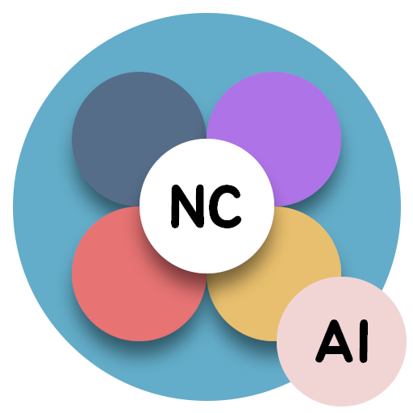

NutriCheck AI가 오픈했습니다!
 NutriCheck AI
영양소 검출 실험 결과가 잘 안나오나요?
NutriCheck AI를 시작하세요!
시작하기
웹캠(또는 카메라)을 완료된 영양소 검출 샘플에 비춰주세요!
![]()